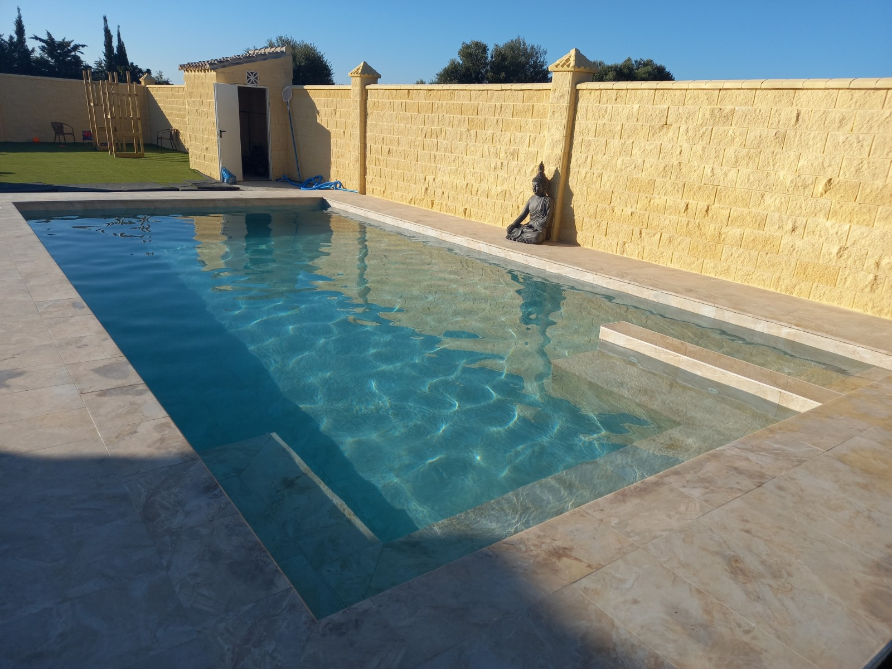
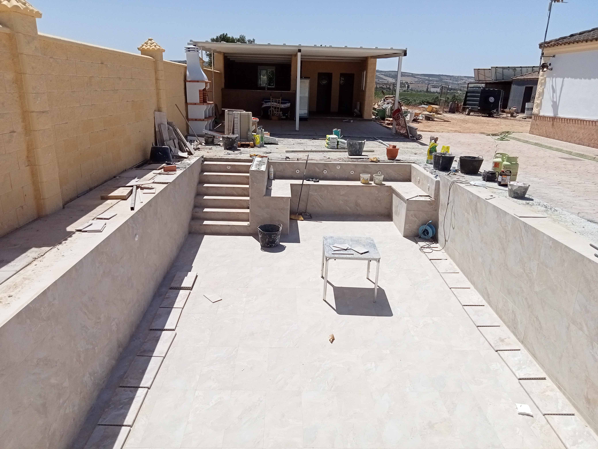
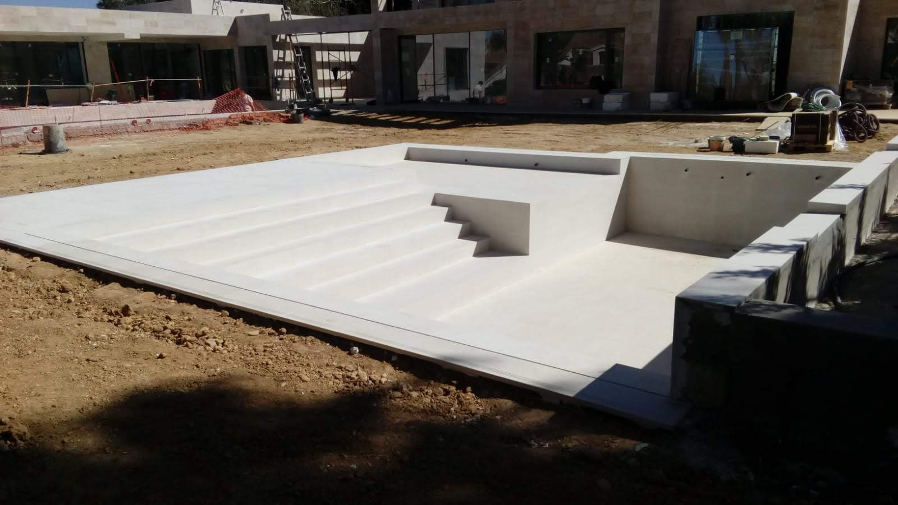
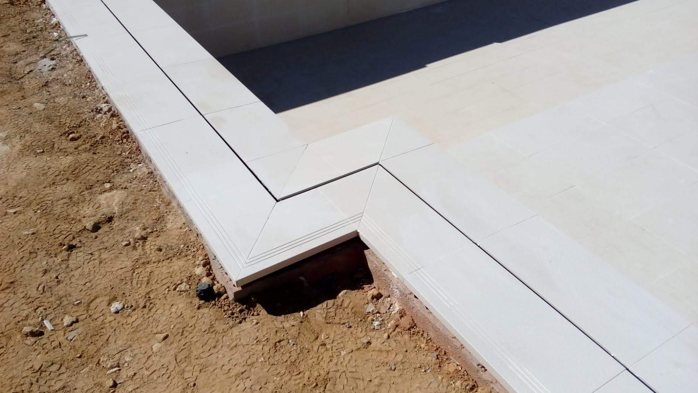
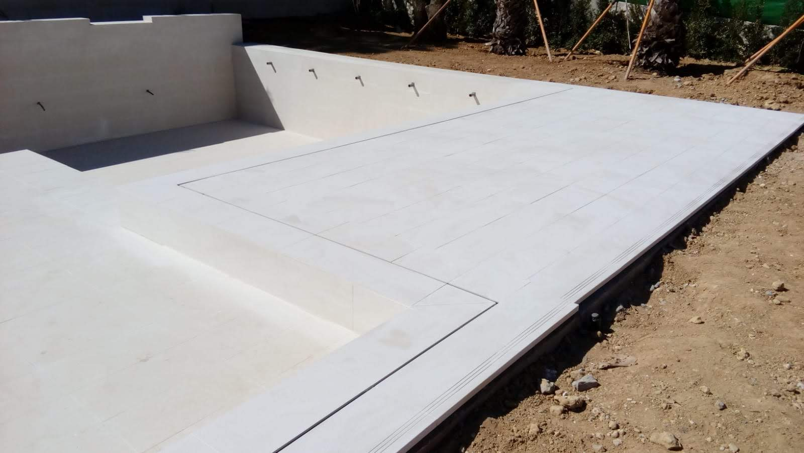
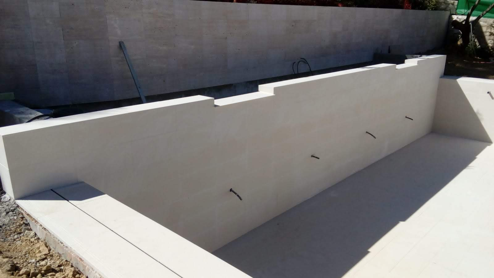
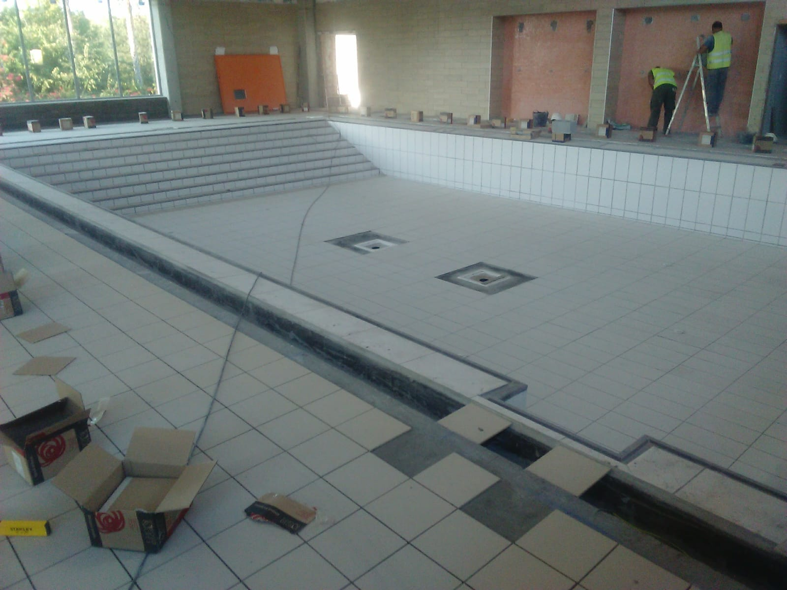
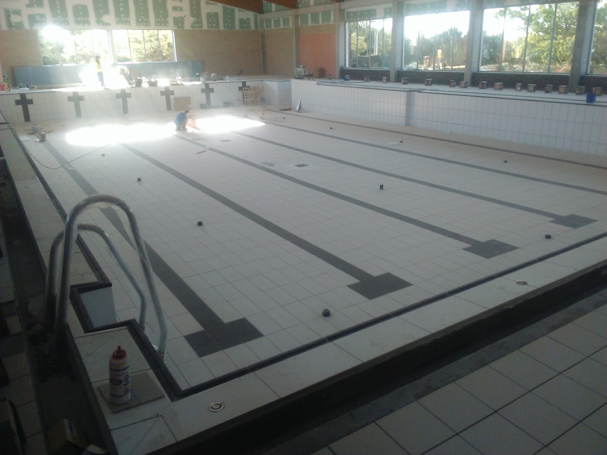

OCM POOL · MATERIALES Y ACABADOS
Porcelánico.
El detalle une el conjunto.
Acabados para el interior de la piscina, las escaleras y la coronación. Estudiamos las piezas y los encuentros para que el vaso y su entorno formen parte del mismo diseño.
Consultar mi acabado ↗
DEL VASO AL EXTERIOR
Un diseño pensado pieza a pieza.
El formato, el tono y la disposición de las piezas definen el aspecto del revestimiento. Las escaleras, los bancos y los cambios de plano completan el conjunto.
En cada proyecto valoramos el soporte y las piezas previstas para cada zona. Revisamos sus indicaciones de uso y el sistema de colocación antes de definir la propuesta.
Estas fotografías muestran trabajos con agua y otros todavía en ejecución, para apreciar tanto el resultado como los detalles del revestimiento.
LA GARROCHA
Tonos naturales, dentro y fuera.
Una vista con agua y otra del vaso durante los trabajos.

SOTOGRANDE
Escaleras, planos y encuentros.
Detalles del revestimiento y de la coronación, con el entorno todavía en obra.




VÉLEZ-MÁLAGA
El revestimiento de una piscina interior.
Fotografías del proceso de colocación, con el vaso vacío y trabajos en el recinto.


ANTES DE ELEGIR
Cada zona necesita su solución.
Distinguimos las piezas del vaso, los peldaños, la coronación y las zonas de paso. La elección se estudia según el uso de cada superficie y las características del producto.
Los cortes, las juntas y los encuentros se definen dentro del proyecto. El formato elegido debe adaptarse a la geometría de la piscina.
Para una reforma, primero revisamos el estado del revestimiento existente y del soporte. Con esa información concretamos los trabajos necesarios.
Conoce también el acabado en gresite ↗Dudas sobre el acabado porcelánico.
¿Se puede usar en el interior y en el exterior?
Podemos estudiar ambas zonas, seleccionando las piezas y el sistema adecuados a cada uso. Revisamos la información del producto antes de plantear su instalación.
¿Podéis renovar una piscina existente?
Sí, podemos valorar una reforma tras revisar el vaso, el soporte y el revestimiento actual.
¿Cómo elijo el tono y el formato?
Revisamos muestras y opciones junto con el diseño de escaleras, coronación y entorno. La luz y el agua modifican el aspecto que se aprecia en las fotografías.
¿Qué cuidados necesita?
Te indicaremos los cuidados según las piezas y los productos de junta instalados. Conviene seguir sus instrucciones de limpieza y revisar cualquier zona deteriorada.
EMPECEMOS POR TU IDEA
Hablemos de tu acabado.
Envíanos la localidad, fotos y medidas aproximadas. Cuéntanos si quieres revestir el vaso, renovar la coronación o estudiar el conjunto.
Pedir presupuesto por WhatsAppVer construcción de piscinas ↗ · Ver reformas ↗